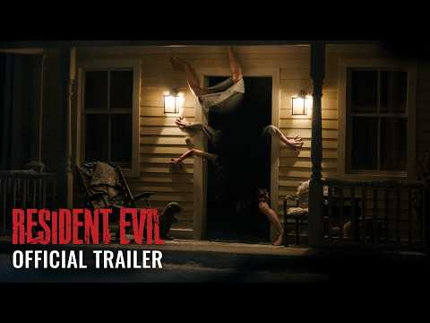
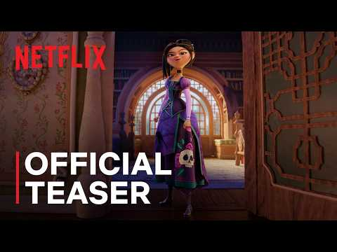
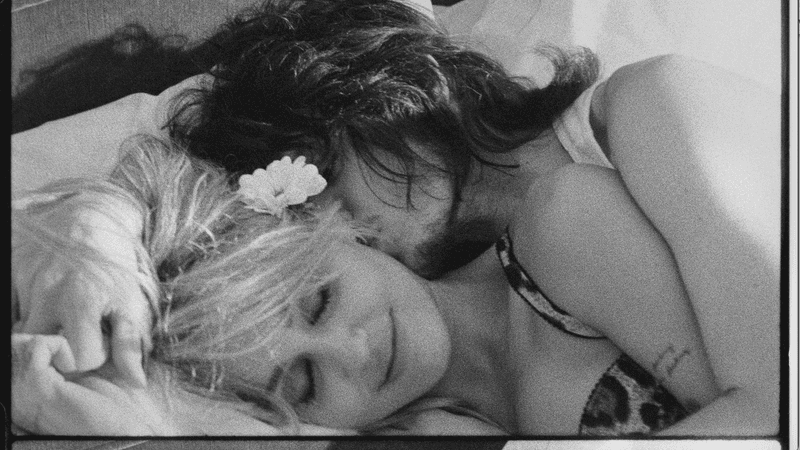
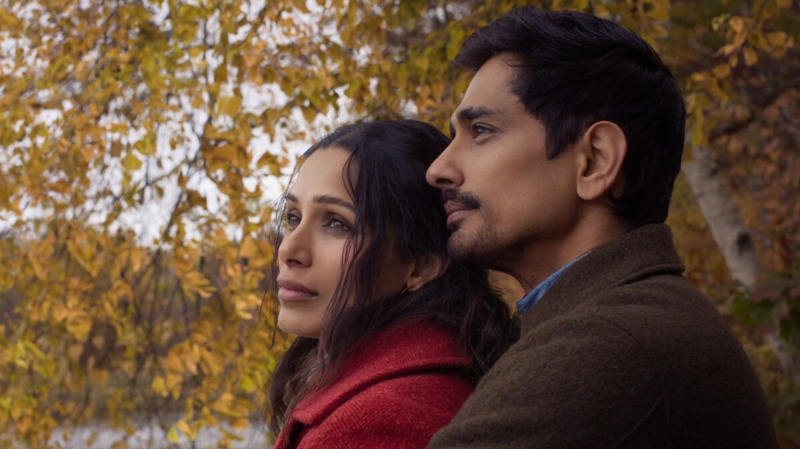
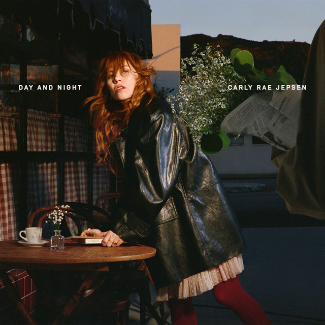

|
Weekday morning
Pop Culture Digest
Friday, September 18, 2026 · Movies, TV, music & streaming
|
|
Six fresh stories to start the weekend: a Resident Evil reboot racing toward a franchise-record opening, Netflix’s star-packed Cinderella flip, Miley’s wedding-video moment, a Jhumpa Lahiri first look, Apple’s Everest epic, and Carly Rae Jepsen’s 24-track double album.
|
|
Movies
Zach Cregger’s Resident Evil tracking ~$58.5M opening

The Weapons director’s Capcom reinvention hits theaters today with tracking that could rewrite franchise box-office history. Industry watchers now put the domestic opening near $58.5 million — nearly double the series’ previous best debut ($26.65M for 2010’s Afterlife). Sony has it in about 3,500 theaters; early reviews already crowned it the franchise’s best-reviewed live-action entry.
Read the box-office tracking report →
|
|
Streaming
Ali Wong hijacks the ball in Netflix’s animated Steps teaser

From the producers of KPop Demon Hunters, Netflix’s fairy-tale flip casts Wong as Lilith — Cinderella’s “evil” stepsister who steals the Fairy Godmother’s wand and breaks the story. Amanda Seyfried voices Cinderella, with Stephanie Hsu, Nikki Glaser, Daniel Radcliffe, Peter Dinklage, and Bette Midler in the mix. The teaser rides Charli xcx’s “Mean Girls”; the movie lands November 20.
Watch the official teaser →
|
|
Music
Miley drops “Let’s Get Married” video with fiancé Maxx Morando

Shot at the Chateau Marmont and directed by Mert Alas, the romantic clip puts her real-life fiancé front and center — no rings exchanged on camera, but plenty of atmosphere. It’s another visual from Bass Persuades, her first album under the mononym Miley after signing with Atlantic. Cue the song, then the full LP.
Watch the video → · Play on Spotify →
|
|
TV / Streaming
First look: Freida Pinto & Siddharth in Netflix’s Unaccustomed Earth

Jhumpa Lahiri’s 2008 short-story collection becomes an eight-episode series from showrunner Madhuri Shekar, who imagines the Cambridge-set characters as one interwoven community. Pinto plays Parul Chaudhury, pulled back from Mumbai by a health crisis and into the orbit of Siddharth’s Amit Mukherjee. Ritesh Batra (The Lunchbox) directed the first two episodes; premiere is December 17.
See the first-look report →
|
|
Movies / Streaming
Tenzing trailer: Genden Phuntsok, Hiddleston & Dafoe on Everest
Apple Original Films’ thriller centers Sherpa climber Tenzing Norgay (Genden Phuntsok) beside Tom Hiddleston’s Edmund Hillary and Willem Dafoe’s John Hunt on the 1953 ascent. Directed by Jennifer Peedom (Sherpa), it frames class, empire, and reverence for Chomolungma as much as summit glory. Theaters October 9; Apple TV October 16.
Watch the trailer → · Deadline coverage →
|
|
Music
Carly Rae Jepsen’s Day and Night — 24 tracks, out today

New Music Friday brings her eighth studio album as a two-disc gift: twelve “day” songs that lean into tempo variety and songwriting craft, plus twelve sundown dance-pop cuts. Billboard clocks the whole run at about an hour and a half — pure CRJ maximalism for the weekend commute and the late-night kitchen dance.
Open Day and Night on Spotify → · Billboard Friday guide →
|
|
You’re getting this weekday Pop Culture Digest because you asked for it. Sent from popculture@agentmail.to · Links go to trailers, streaming pages, and source reporting.
|